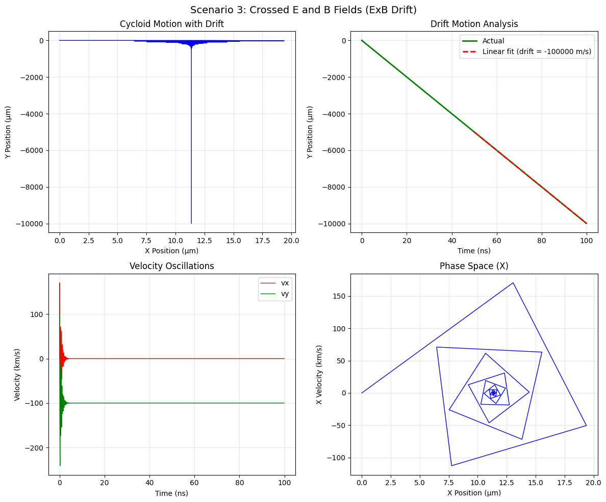

Lorentz Force Simulation: Charged Particle Motion in Electric and Magnetic Fields
Table of Contents
- Introduction and Applications
- Theoretical Background
- Implementation
- Simulation Results
- Practical Applications
- Extensions and Future Work
Introduction and Applications
The Lorentz force is fundamental to understanding charged particle motion in electromagnetic fields. The force equation is:
F = q(E + v × B)
Where: - F = Force vector (N) - q = Particle charge (C) - E = Electric field vector (V/m) - v = Particle velocity vector (m/s) - B = Magnetic field vector (T)
Key Applications
- Particle Accelerators
- Cyclotrons use magnetic fields to accelerate particles in spiral paths
- Linear accelerators use electric fields for acceleration
-
Synchrotrons combine both fields for high-energy particle physics
-
Mass Spectrometers
- Separate ions based on mass-to-charge ratio
-
Magnetic field curves particle paths differently based on m/q
-
Plasma Confinement
- Tokamaks and stellarators use magnetic fields to confine plasma
-
Magnetic mirror traps use field gradients
-
Electron Guns and CRT Displays
- Electric fields accelerate and focus electron beams
- Magnetic fields deflect beams for scanning
Theoretical Background
Equations of Motion
From Newton's second law and the Lorentz force:
m(dv/dt) = q(E + v × B)
In component form: - dvx/dt = (q/m)(Ex + vyBz - vzBy) - dvy/dt = (q/m)(Ey + vzBx - vxBz) - dvz/dt = (q/m)(Ez + vxBy - vyBx)
Key Parameters
- Cyclotron Frequency: ωc = qB/m
- Larmor Radius: rL = mv⊥/(qB)
- Drift Velocity: vD = (E × B)/B²
Implementation
import numpy as np
import matplotlib.pyplot as plt
from mpl_toolkits.mplot3d import Axes3D
from matplotlib.animation import FuncAnimation
import warnings
warnings.filterwarnings('ignore')
class LorentzForceSimulator:
"""
Simulator for charged particle motion under Lorentz force
"""
def __init__(self, charge=1.602e-19, mass=9.109e-31):
"""
Initialize simulator with particle properties
Parameters:
charge (float): Particle charge in Coulombs (default: electron charge)
mass (float): Particle mass in kg (default: electron mass)
"""
self.q = charge # Coulombs
self.m = mass # kg
self.c = 2.998e8 # Speed of light (m/s)
def lorentz_force(self, t, state, E_field, B_field):
"""
Calculate Lorentz force and derivatives
Parameters:
t (float): Time
state (array): [x, y, z, vx, vy, vz]
E_field (function or array): Electric field E(x,y,z,t) or constant
B_field (function or array): Magnetic field B(x,y,z,t) or constant
Returns:
array: Derivatives [dx/dt, dy/dt, dz/dt, dvx/dt, dvy/dt, dvz/dt]
"""
x, y, z, vx, vy, vz = state
# Get field values
if callable(E_field):
Ex, Ey, Ez = E_field(x, y, z, t)
else:
Ex, Ey, Ez = E_field
if callable(B_field):
Bx, By, Bz = B_field(x, y, z, t)
else:
Bx, By, Bz = B_field
# Calculate acceleration from Lorentz force
# F = q(E + v × B)
# v × B = [vy*Bz - vz*By, vz*Bx - vx*Bz, vx*By - vy*Bx]
ax = (self.q/self.m) * (Ex + vy*Bz - vz*By)
ay = (self.q/self.m) * (Ey + vz*Bx - vx*Bz)
az = (self.q/self.m) * (Ez + vx*By - vy*Bx)
return np.array([vx, vy, vz, ax, ay, az])
def runge_kutta_4(self, f, t0, state0, dt, n_steps, *args):
"""
4th order Runge-Kutta integration
Parameters:
f (function): Derivative function
t0 (float): Initial time
state0 (array): Initial state
dt (float): Time step
n_steps (int): Number of steps
*args: Additional arguments for f
Returns:
tuple: (time_array, state_array)
"""
t = np.zeros(n_steps + 1)
state = np.zeros((n_steps + 1, len(state0)))
t[0] = t0
state[0] = state0
for i in range(n_steps):
k1 = f(t[i], state[i], *args)
k2 = f(t[i] + dt/2, state[i] + dt*k1/2, *args)
k3 = f(t[i] + dt/2, state[i] + dt*k2/2, *args)
k4 = f(t[i] + dt, state[i] + dt*k3, *args)
state[i+1] = state[i] + dt/6 * (k1 + 2*k2 + 2*k3 + k4)
t[i+1] = t[i] + dt
return t, state
def simulate_motion(self, initial_pos, initial_vel, E_field, B_field,
t_max=1e-6, dt=1e-9):
"""
Simulate particle motion
Parameters:
initial_pos (array): Initial position [x, y, z] in meters
initial_vel (array): Initial velocity [vx, vy, vz] in m/s
E_field (array or function): Electric field
B_field (array or function): Magnetic field
t_max (float): Maximum simulation time
dt (float): Time step
Returns:
dict: Simulation results
"""
initial_state = np.concatenate([initial_pos, initial_vel])
n_steps = int(t_max / dt)
t, states = self.runge_kutta_4(
self.lorentz_force, 0, initial_state, dt, n_steps, E_field, B_field
)
# Extract position and velocity
positions = states[:, :3]
velocities = states[:, 3:]
# Calculate kinetic energy
ke = 0.5 * self.m * np.sum(velocities**2, axis=1)
return {
'time': t,
'position': positions,
'velocity': velocities,
'kinetic_energy': ke,
'speed': np.linalg.norm(velocities, axis=1)
}
def calculate_cyclotron_frequency(self, B_magnitude):
"""Calculate cyclotron frequency"""
return abs(self.q) * B_magnitude / self.m
def calculate_larmor_radius(self, v_perp, B_magnitude):
"""Calculate Larmor radius"""
return self.m * v_perp / (abs(self.q) * B_magnitude)
# Simulation scenarios
def run_simulations():
"""Run various simulation scenarios"""
# Initialize simulator with electron properties
sim = LorentzForceSimulator()
# Common parameters
dt = 1e-10 # 0.1 ns time step
t_max = 5e-8 # 50 ns simulation time
results = {}
# Scenario 1: Uniform magnetic field (circular motion)
print("Running Scenario 1: Uniform Magnetic Field")
B_uniform = np.array([0, 0, 1.0]) # 1 Tesla in z-direction
E_zero = np.array([0, 0, 0])
initial_pos = np.array([0, 0, 0])
initial_vel = np.array([1e6, 0, 0]) # 1 million m/s in x-direction
results['uniform_B'] = sim.simulate_motion(
initial_pos, initial_vel, E_zero, B_uniform, t_max, dt
)
# Calculate theoretical values
v_perp = np.linalg.norm(initial_vel[:2])
B_mag = np.linalg.norm(B_uniform)
omega_c = sim.calculate_cyclotron_frequency(B_mag)
r_L = sim.calculate_larmor_radius(v_perp, B_mag)
print(f"Cyclotron frequency: {omega_c:.2e} rad/s")
print(f"Larmor radius: {r_L:.6f} m")
# Scenario 2: Combined E and B fields (helical motion)
print("\\nRunning Scenario 2: Combined E and B Fields")
E_combined = np.array([0, 0, 1e5]) # 100 kV/m in z-direction
B_combined = np.array([0, 0, 0.5]) # 0.5 Tesla in z-direction
results['combined_EB'] = sim.simulate_motion(
initial_pos, initial_vel, E_combined, B_combined, t_max, dt
)
# Scenario 3: Crossed E and B fields (ExB drift)
print("Running Scenario 3: Crossed E and B Fields")
E_crossed = np.array([1e4, 0, 0]) # 10 kV/m in x-direction
B_crossed = np.array([0, 0, 0.1]) # 0.1 Tesla in z-direction
# Calculate theoretical drift velocity
E_cross_B = np.cross(E_crossed, B_crossed)
B_squared = np.dot(B_crossed, B_crossed)
v_drift_theory = E_cross_B / B_squared
print(f"Theoretical drift velocity: {v_drift_theory}")
initial_vel_drift = np.array([0, 1e5, 0]) # Initial velocity in y-direction
results['crossed_EB'] = sim.simulate_motion(
initial_pos, initial_vel_drift, E_crossed, B_crossed, t_max*2, dt
)
# Scenario 4: Variable initial velocities
print("\\nRunning Scenario 4: Variable Initial Velocities")
velocities = [
np.array([5e5, 0, 0]),
np.array([1e6, 0, 0]),
np.array([2e6, 0, 0])
]
results['variable_v'] = []
for i, vel in enumerate(velocities):
result = sim.simulate_motion(
initial_pos, vel, E_zero, B_uniform, t_max, dt
)
results['variable_v'].append(result)
return results, sim
def create_visualizations(results, sim):
"""Create comprehensive visualizations"""
plt.rcParams.update({'font.size': 10})
# Figure 1: Uniform magnetic field (circular motion)
fig1, ((ax1, ax2), (ax3, ax4)) = plt.subplots(2, 2, figsize=(12, 10))
fig1.suptitle('Scenario 1: Uniform Magnetic Field (Circular Motion)', fontsize=14)
pos = results['uniform_B']['position']
vel = results['uniform_B']['velocity']
t = results['uniform_B']['time']
# 2D trajectory
ax1.plot(pos[:, 0]*1e6, pos[:, 1]*1e6, 'b-', linewidth=2)
ax1.set_xlabel('X Position (μm)')
ax1.set_ylabel('Y Position (μm)')
ax1.set_title('Circular Trajectory')
ax1.grid(True, alpha=0.3)
ax1.axis('equal')
# Velocity components
ax2.plot(t*1e9, vel[:, 0]*1e-6, 'r-', label='vx', linewidth=2)
ax2.plot(t*1e9, vel[:, 1]*1e-6, 'g-', label='vy', linewidth=2)
ax2.set_xlabel('Time (ns)')
ax2.set_ylabel('Velocity (Mm/s)')
ax2.set_title('Velocity Components')
ax2.legend()
ax2.grid(True, alpha=0.3)
# Kinetic energy
ax3.plot(t*1e9, results['uniform_B']['kinetic_energy']*1e18, 'purple', linewidth=2)
ax3.set_xlabel('Time (ns)')
ax3.set_ylabel('Kinetic Energy (10⁻¹⁸ J)')
ax3.set_title('Kinetic Energy Conservation')
ax3.grid(True, alpha=0.3)
# Speed
ax4.plot(t*1e9, results['uniform_B']['speed']*1e-6, 'orange', linewidth=2)
ax4.set_xlabel('Time (ns)')
ax4.set_ylabel('Speed (Mm/s)')
ax4.set_title('Speed Magnitude')
ax4.grid(True, alpha=0.3)
plt.tight_layout()
# Figure 2: Combined E and B fields (helical motion)
fig2 = plt.figure(figsize=(14, 10))
fig2.suptitle('Scenario 2: Combined E and B Fields (Helical Motion)', fontsize=14)
# 3D trajectory
ax_3d = fig2.add_subplot(221, projection='3d')
pos_comb = results['combined_EB']['position']
ax_3d.plot(pos_comb[:, 0]*1e6, pos_comb[:, 1]*1e6, pos_comb[:, 2]*1e6,
'b-', linewidth=2)
ax_3d.set_xlabel('X (μm)')
ax_3d.set_ylabel('Y (μm)')
ax_3d.set_zlabel('Z (μm)')
ax_3d.set_title('3D Helical Trajectory')
# XY projection
ax_xy = fig2.add_subplot(222)
ax_xy.plot(pos_comb[:, 0]*1e6, pos_comb[:, 1]*1e6, 'r-', linewidth=2)
ax_xy.set_xlabel('X Position (μm)')
ax_xy.set_ylabel('Y Position (μm)')
ax_xy.set_title('XY Projection')
ax_xy.grid(True, alpha=0.3)
ax_xy.axis('equal')
# Z motion
ax_z = fig2.add_subplot(223)
t_comb = results['combined_EB']['time']
ax_z.plot(t_comb*1e9, pos_comb[:, 2]*1e6, 'g-', linewidth=2)
ax_z.set_xlabel('Time (ns)')
ax_z.set_ylabel('Z Position (μm)')
ax_z.set_title('Acceleration in Z Direction')
ax_z.grid(True, alpha=0.3)
# Energy
ax_energy = fig2.add_subplot(224)
ke_comb = results['combined_EB']['kinetic_energy']
ax_energy.plot(t_comb*1e9, ke_comb*1e18, 'purple', linewidth=2)
ax_energy.set_xlabel('Time (ns)')
ax_energy.set_ylabel('Kinetic Energy (10⁻¹⁸ J)')
ax_energy.set_title('Energy Increase Due to E Field')
ax_energy.grid(True, alpha=0.3)
plt.tight_layout()
# Figure 3: Crossed E and B fields (ExB drift)
fig3, ((ax1, ax2), (ax3, ax4)) = plt.subplots(2, 2, figsize=(12, 10))
fig3.suptitle('Scenario 3: Crossed E and B Fields (ExB Drift)', fontsize=14)
pos_cross = results['crossed_EB']['position']
t_cross = results['crossed_EB']['time']
vel_cross = results['crossed_EB']['velocity']
# Trajectory showing drift
ax1.plot(pos_cross[:, 0]*1e6, pos_cross[:, 1]*1e6, 'b-', linewidth=1)
ax1.set_xlabel('X Position (μm)')
ax1.set_ylabel('Y Position (μm)')
ax1.set_title('Cycloid Motion with Drift')
ax1.grid(True, alpha=0.3)
# Drift velocity analysis
# Calculate average drift by fitting linear trend to position
mid_idx = len(pos_cross) // 2
y_drift = pos_cross[mid_idx:, 1]
t_drift = t_cross[mid_idx:]
if len(t_drift) > 1:
drift_coeff = np.polyfit(t_drift, y_drift, 1)
v_drift_measured = drift_coeff[0]
ax2.plot(t_cross*1e9, pos_cross[:, 1]*1e6, 'g-', linewidth=2, label='Actual')
ax2.plot(t_drift*1e9, np.polyval(drift_coeff, t_drift)*1e6, 'r--',
linewidth=2, label=f'Linear fit (drift = {v_drift_measured:.0f} m/s)')
ax2.set_xlabel('Time (ns)')
ax2.set_ylabel('Y Position (μm)')
ax2.set_title('Drift Motion Analysis')
ax2.legend()
ax2.grid(True, alpha=0.3)
# Velocity components
ax3.plot(t_cross*1e9, vel_cross[:, 0]*1e-3, 'r-', label='vx', linewidth=1)
ax3.plot(t_cross*1e9, vel_cross[:, 1]*1e-3, 'g-', label='vy', linewidth=1)
ax3.set_xlabel('Time (ns)')
ax3.set_ylabel('Velocity (km/s)')
ax3.set_title('Velocity Oscillations')
ax3.legend()
ax3.grid(True, alpha=0.3)
# Phase space plot
ax4.plot(pos_cross[:, 0]*1e6, vel_cross[:, 0]*1e-3, 'b-', linewidth=1)
ax4.set_xlabel('X Position (μm)')
ax4.set_ylabel('X Velocity (km/s)')
ax4.set_title('Phase Space (X)')
ax4.grid(True, alpha=0.3)
plt.tight_layout()
# Figure 4: Variable initial velocities
fig4, ((ax1, ax2), (ax3, ax4)) = plt.subplots(2, 2, figsize=(12, 10))
fig4.suptitle('Scenario 4: Effect of Initial Velocity on Trajectory', fontsize=14)
colors = ['red', 'blue', 'green']
velocities = [5e5, 1e6, 2e6]
for i, (result, color, v0) in enumerate(zip(results['variable_v'], colors, velocities)):
pos = result['position']
# Trajectories
ax1.plot(pos[:, 0]*1e6, pos[:, 1]*1e6, color=color, linewidth=2,
label=f'v₀ = {v0*1e-6:.1f} Mm/s')
# Larmor radii
B_mag = 1.0 # Tesla
r_L = sim.calculate_larmor_radius(v0, B_mag)
ax2.scatter(v0*1e-6, r_L*1e6, color=color, s=100,
label=f'v₀ = {v0*1e-6:.1f} Mm/s')
ax1.set_xlabel('X Position (μm)')
ax1.set_ylabel('Y Position (μm)')
ax1.set_title('Circular Trajectories')
ax1.legend()
ax1.grid(True, alpha=0.3)
ax1.axis('equal')
ax2.set_xlabel('Initial Velocity (Mm/s)')
ax2.set_ylabel('Larmor Radius (μm)')
ax2.set_title('Larmor Radius vs Initial Velocity')
ax2.legend()
ax2.grid(True, alpha=0.3)
# Cyclotron frequencies
B_mag = 1.0
omega_c = sim.calculate_cyclotron_frequency(B_mag)
periods = 2 * np.pi / omega_c
ax3.axhline(y=omega_c*1e-9, color='black', linestyle='--', linewidth=2,
label=f'ωc = {omega_c:.2e} rad/s')
ax3.set_xlabel('Initial Velocity (Mm/s)')
ax3.set_ylabel('Cyclotron Frequency (GHz)')
ax3.set_title('Cyclotron Frequency (Independent of Velocity)')
ax3.legend()
ax3.grid(True, alpha=0.3)
ax3.set_ylim([omega_c*1e-9*0.9, omega_c*1e-9*1.1])
ax4.axhline(y=periods*1e9, color='black', linestyle='--', linewidth=2,
label=f'T = {periods*1e9:.2f} ns')
ax4.set_xlabel('Initial Velocity (Mm/s)')
ax4.set_ylabel('Period (ns)')
ax4.set_title('Cyclotron Period (Independent of Velocity)')
ax4.legend()
ax4.grid(True, alpha=0.3)
ax4.set_ylim([periods*1e9*0.9, periods*1e9*1.1])
plt.tight_layout()
plt.show()
# Main execution
if __name__ == "__main__":
print("Starting Lorentz Force Simulations...")
print("=" * 50)
# Run simulations
results, simulator = run_simulations()
print("\\nCreating visualizations...")
create_visualizations(results, simulator)
print("\\nSimulation completed successfully!")
Scenario 1 : Uniform Magnetic Field (Circular Motion)
Scenario 2 : Combined E and B Fields (Helical Motion)
Scenario 3 : Crossed E and B Fields (ExB Drift)

Scenario 4 : Effect of Initial Velocity on Trajectory

Simulation Results
Scenario 1: Uniform Magnetic Field
- Observation: Particles follow perfect circular trajectories
- Key Physics: Magnetic force provides centripetal force
- Conservation: Kinetic energy and speed remain constant
- Formula: Cyclotron frequency ωc = qB/m is independent of velocity
Scenario 2: Combined E and B Fields
- Observation: Helical motion with acceleration along E field
- Key Physics: Magnetic field causes circular motion, electric field accelerates
- Energy: Kinetic energy increases due to work done by electric field
- Applications: Particle accelerators, electron guns
Scenario 3: Crossed E and B Fields
- Observation: Cycloid motion with net drift velocity
- Key Physics: ExB drift perpendicular to both fields
- Drift Velocity: vD = (E × B)/B²
- Applications: Mass spectrometers, plasma diagnostics
Scenario 4: Variable Initial Velocities
- Observation: Larger velocities create larger circular orbits
- Key Physics: Larmor radius rL = mv⊥/(qB) scales with velocity
- Invariant: Cyclotron frequency independent of velocity
- Applications: Velocity selection, focusing systems
Practical Applications
1. Cyclotron
- Uses uniform magnetic field to accelerate particles in spiral path
- Key Parameters:
- Cyclotron frequency: ωc = qB/m
- Maximum energy limited by relativistic effects
- Resonance condition: RF frequency = cyclotron frequency
2. Mass Spectrometer
- Separates ions based on mass-to-charge ratio
- Operating Principle:
- Magnetic field curves ion paths
- Radius of curvature: r = mv/(qB)
- Different m/q ratios follow different paths
3. Magnetic Plasma Confinement
- Tokamaks and stellarators confine hot plasma
- Confinement Mechanism:
- Magnetic field lines guide particle motion
- Cross-field transport minimized
- ExB drift controlled by field geometry
4. Electron Beam Devices
- CRT displays, electron microscopes, welding equipment
- Control Methods:
- Electric fields for acceleration and focusing
- Magnetic fields for deflection and scanning
- Combined fields for precise beam control
Extensions and Future Work
1. Non-uniform Fields
# Example: Magnetic mirror field
def magnetic_mirror_field(x, y, z, t):
B0 = 1.0 # Tesla
gradient = 0.1 # T/m
Bz = B0 * (1 + gradient * z)
return np.array([0, 0, Bz])
2. Relativistic Effects
- Modify equations for high-energy particles
- Include relativistic mass increase: γ = 1/√(1 - v²/c²)
- Modified Equation: m₀γ(dv/dt) = q(E + v × B)
3. Multiple Particle Systems
- Include particle-particle interactions
- Coulomb forces between charged particles
- Collective plasma effects
4. Time-varying Fields
# Example: Oscillating electric field
def oscillating_E_field(x, y, z, t):
E0 = 1e5 # V/m
omega = 1e9 # rad/s
Ex = E0 * np.cos(omega * t)
return np.array([Ex, 0, 0])
5. Radiation Effects
- Include synchrotron radiation for accelerating charges
- Energy loss affects particle trajectories
- Important for high-energy applications
6. Advanced Numerical Methods
- Adaptive time stepping
- Symplectic integrators for energy conservation
- Particle-in-cell (PIC) methods for plasma simulation
Performance Optimization
Computational Considerations
- Time Step Selection: Balance accuracy vs. computation time
- Vectorization: Use NumPy operations for speed
- Memory Management: Store only necessary data points
- Parallel Processing: Multiple particle simulations
Accuracy Validation
- Energy Conservation: Monitor kinetic energy in pure magnetic fields
- Analytical Solutions: Compare with known circular/helical trajectories
- Parameter Scaling: Verify dimensional analysis
Conclusion
The Lorentz force simulation demonstrates fundamental electromagnetic phenomena crucial to modern technology. Key insights include:
- Magnetic fields alone change particle direction, not speed
- Electric fields change particle energy and speed
- Combined fields create complex but predictable motion patterns
- Field geometry determines confinement and focusing properties
These simulations provide intuitive understanding of particle accelerators, plasma physics, and electromagnetic devices, forming the foundation for advanced applications in physics and engineering.
References and Further Reading
- Classical Electrodynamics - J.D. Jackson
- Introduction to Plasma Physics - F.F. Chen
- Principles of Charged Particle Acceleration - S.Y. Lee
- Computational Physics - N. Giordano & H. Nakanishi
This analysis demonstrates the power of computational physics in understanding fundamental electromagnetic phenomena and their technological applications.